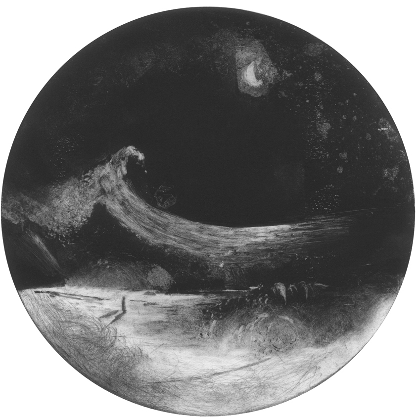
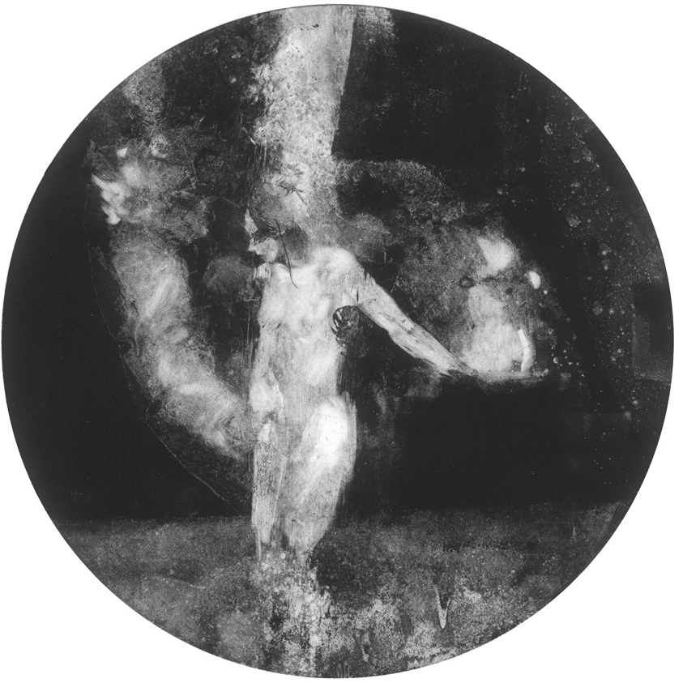
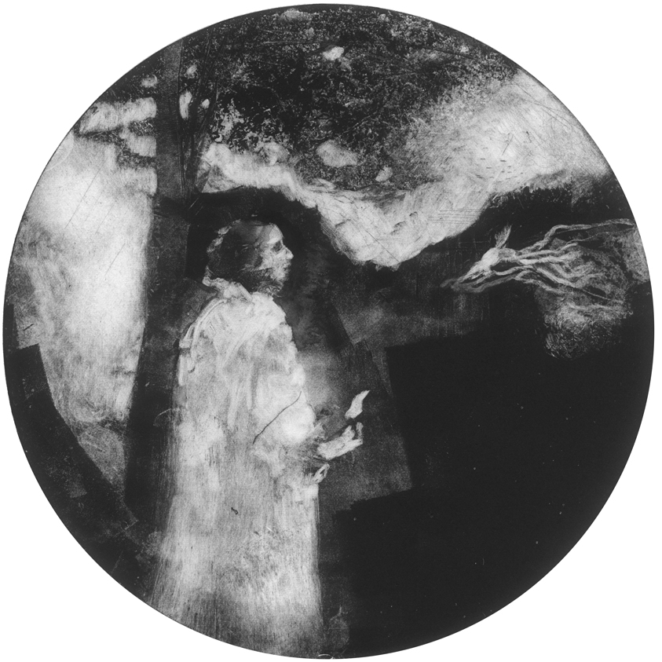
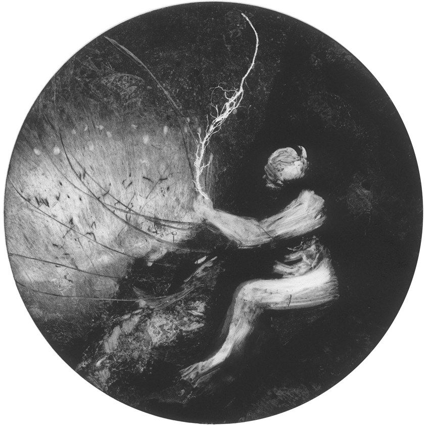
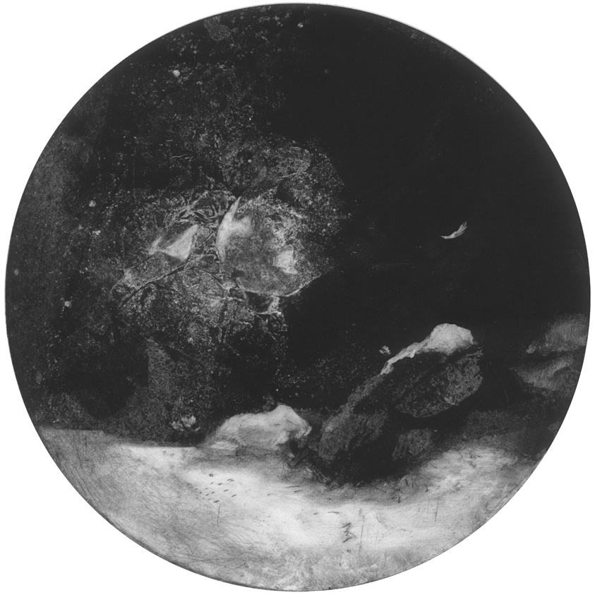
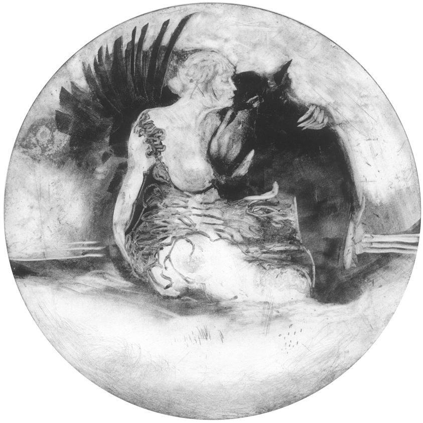
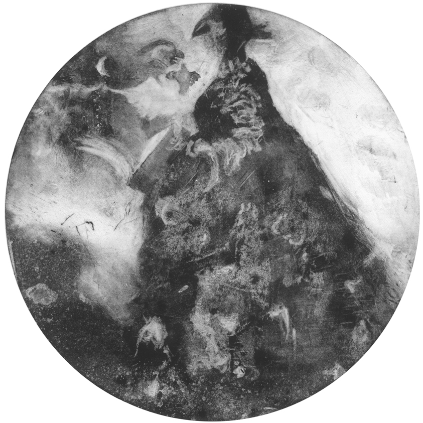

The Round Soul of the World

Curse you, Mocking Moon
Curse you mocking moon
It's not as though you ever cared or dared to do a thing
but sit upon your perch and watch
and while away the night time with your guileless, gormless grin
Waning to the quick.
Waxing full and waxing new
and waxing ever fatter,
while the whole world boos and claps
at these fools that you have trapped,
and at your hoax to coax the mad ones from their heads,
and lure lovers to their beds,
and to sooth the swooning dreamers
sinking in your lonely hue.
Mocking moon
Curse you mocking moon.
Long ago I fell in love with you
and the way you called the swelling seasalt tide,
and swelled my blood to teeming life,
and made the months,
and lit the crooked wayward path
for burning souls with borrowed light,
and the way you loved the night.
Curse you mocking moon
we made a deal and I believed in you
but oh, your night it is so dark and cold
and I can't see two feet in front of me,
nor tell wood from towering tree,
nor ditch from darkened road,
mocking moon, light the way and see me home.
Curse you mocking moon
Where are you now that I need you -
hiding out behind some rotten cloud
and what am I to do but
shake my fists at the dark vault of the sky,
and curse the day I was beguiled
by the craters of your eyes,
and when you show your face I'll do
as wolves and loons and godforsaken creatures do
and howl at you.
© Laura Hyland 2010

This Love
In the dead of night,
while the whole world sleeps,
you have risen to the surface from the deep.
You have chosen these two hearts to guide you.
When the first tide flows in these tiny lungs,
and the first voiced breath on the air resounds,
may you always know this to be your reflection.
And you'll weather many winters
in these warm hands, in these strong arms.
This love is wide and vast,
that you may remain within it and yet travel far.
© Laura Hyland 2005

The Emptying of the Ashes
text by Maureen Barry, Duncormick, Wexford
Were it not for the emptying of the ashes
I would miss the glory of the morning -
a curious time of day to be spellbound, no doubt.
But I have never seen such spectacular skies,
bare skeleton ash trees and well-covered busby-like spruce,
lone seagulls floating miraculously,
and clouds tipped with the most magical light of dawn
over a church spire.
Every morning this complete silence
caused by an unusual absence of wind
seems filled with a great presence,
and I whisper to myself,
‘Nobody understands anything’.
© Maureen Barry 1960

Blackbird
inspired by 'The Blackbird of Derrycairn' by Austin Clarke
Sorcha, come home.
I missed you this winter.
It isn't the same here without you.
I've been to see Charlie,
the owl of the harbor.
She sends her love.
She's doing well, despite all;
hexing and smoking and spinning yarns,
same as ever.
And if we are Patrick,
then where is our blackbird -
come to tap on our cell,
and tell us again and again
that still no handbell gives a glad sound?
And the only higher calling
is flesh and blood and shelter.
© Laura Hyland 2014

Requiem
They found him in the snow -
stretched out as though sleeping on his back.
One hand in his pocket,
one hand on his breast.
Bannow sighs soft in the darklight,
and stars to make one yearn with wonder
brightly burned.
I walked out by Davey's farm,
sleeping neatly in the night.
All the way down to the bay.
And I met neither beast, nor man,
nor motor on my way.
But somewhere not far off my path
X draws his final breath.
Perhaps it echoed faintly in my footsteps
or glittered on the frost.
And when the following day I heard it said
I thought it cruel and sad.
Oh but surely he was blessed
to pass along so softly
on such a night as this.
© Laura Hyland 2010

Newborn
All around you
Light travels at great speed -
Bounces madly off redbrick walls at sunrise,
falls gently on the woodbine,
dives deep into the dark Earth.
Meanwhile,
swaddled in a haze of newness,
tiny muscles tighten around line and hue.
And slowly,
slowly
the whole world unfolds
in all her dazzling glory.
Now look!
The great vault of the sky,
the brilliance of your brand new skin,
The contour of your hands -
The way they move at will.
© Laura Hyland 2009

The Round Soul of the World
You are round.
Perfectly so.
And I am full of indentations, inconsistent.
But who knows -
maybe we too are spherical from a distance.
And I will give you this:
my will, my word, these hands.
And I ask in return:
a roof above my head, my keep,
and love to warm my palms,
that I might roll between them
the round soul of the world.
© Laura Hyland 2010